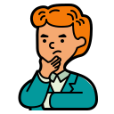

Esta rama se ocupa de investigar la naturaleza fundamental de la realidad. Examina preguntas fundamentales sobre la existencia, la realidad, la causalidad, el tiempo, el espacio y la relación entre mente y cuerpo.
Stanford Encyclopedia of Philosophy
Algunos autores de esta rama:
- Hegel
- Heideger
- Aristóteles
También conocida como teoría del conocimiento, se dedica al estudio de la naturaleza, el origen y los límites del conocimiento humano. Se pregunta cómo conocemos las cosas, qué es la verdad y cómo podemos justificar nuestros conocimientos.
Stanford Encyclopedia of Philosophy
Algunos autores de esta rama:
- Leibniz
- Descartes
- Locke
La ética se centra en el estudio de los valores, los principios morales y el comportamiento humano. Investiga qué es lo correcto o lo incorrecto, cómo debemos actuar y cuál es la base para la toma de decisiones éticas.
Stanford Encyclopedia of Philosophy
Algunos autores de esta rama:
- Platón
- Aristóteles
- Kant
Examina cuestiones relacionadas con el poder, la autoridad, la justicia y la organización de la sociedad. Se ocupa de la estructura y función del gobierno, los derechos y las responsabilidades individuales, y los sistemas políticos.
Stanford Encyclopedia of Philosophy
Algunos autores de esta rama:
- Hobbes
- Rousseau
- John Rawls
Se dedica al estudio de la belleza, el arte y la apreciación estética. Investiga los criterios para la valoración del arte, las emociones y experiencias estéticas, y la relación entre la belleza y la creatividad.
Stanford Encyclopedia of Philosophy
Algunos autores de esta rama:
- Kant
- Schopenhauer
- Burke
Examina la naturaleza de la mente, la conciencia y la relación entre la mente y el cuerpo. Investiga temas como la percepción, la cognición, el libre albedrío y la naturaleza de la experiencia subjetiva.
 Stanford Encyclopedia of Philosophy
Algunos autores de esta rama:
- Descartes
- Daniel Dennett
- John Searle
La lógica se ocupa del razonamiento válido y correcto. Estudia los principios y métodos del pensamiento correcto, las reglas del razonamiento deductivo e inductivo, y la validez de los argumentos.
Stanford Encyclopedia of Philosophy
Algunos autores de esta rama:
- Frege
- Russell
- Wittgenstain